DeepSeek-V3 系列是 DeepSeek-AI 推出的开源大语言模型家族，采用 Mixture-of-Experts（MoE）架构， 在保持开源可用性的同时追求与闭源前沿模型的性能对齐。2025 年下半年，DeepSeek 连续发布了两篇重要技术报告：
MoE 是一种条件计算架构：模型拥有大量参数（总参数），但每个 token 只激活其中一小部分（激活参数）。 在 DeepSeek 系列中，每个 Transformer 块的 FFN 层被替换为 DeepSeekMoE 结构，包含 1 个共享专家（shared expert） 和数百个路由专家（routed experts）。路由机制根据 token 的隐状态选择 top-K 个专家进行计算。
这使得模型在保持巨大模型容量的同时，单个 token 的计算开销远小于等参数量的 Dense 模型。 DeepSeek-V4-Pro 总参 1.6T 但每个 token 仅激活 49B，Flash 版总参 284B 仅激活 13B。
MLA 是 DeepSeek-V2 提出的注意力压缩方案。其核心思想是将 KV 缓存压缩到低秩隐向量（latent vector）， 推理时从隐向量恢复出多头 KV。MLA 在 MHA 模式（用于训练/预填充）和 MQA 模式（用于解码）之间可以等价转换， 兼顾训练表达力和推理效率。DeepSeek-V3.2 的 DSA 基于 MLA 的 MQA 模式实例化。
标准注意力的复杂度为 O(L2)，在长上下文场景中成为瓶颈。稀疏注意力的核心思想是： 每个 query token 不需要关注所有 key-value，而是只选择最相关的子集进行注意力计算，将复杂度降为 O(Lk)。 关键挑战在于如何高效、准确地选择这些 top-k 条目。
GRPO 是 DeepSeek 提出的强化学习算法，用于模型的后训练对齐。对于每个问题 q， 从旧策略采样一组回答 {o1,...,oG}，通过奖励模型评分后计算组内相对优势：
GRPO 无需额外的价值网络，直接利用组内奖励的相对排序来估计优势函数，大大简化了 RL 训练的基础设施需求。
MTP 让模型在每个位置同时预测未来多个 token，而非仅预测下一个。DeepSeek-V3/V4 均设置 MTP 深度为 1 （即额外预测一个 token）。MTP 在训练时作为辅助损失提升表征学习质量，推理时可用于推测解码（speculative decoding）加速。
DeepSeek-V3.2 是基于 DeepSeek-V3.1-Terminus 的增量升级版本，核心目标是在不改变模型基础架构的前提下， 通过三项关键技术突破来缩小与闭源前沿模型的差距：
引入 Lightning Indexer + Top-k Selector 双组件机制，将注意力复杂度从 O(L2) 降至 O(Lk)
后训练计算预算超过预训练成本的 10%，通过四项 GRPO 改进实现稳定的大规模 RL 训练
自动合成 1,827 个环境、4,417 个任务，大规模驱动 Agent 能力的 RL 训练
放宽长度约束的高算力推理版本，在 IMO/IOI/ICPC WF/CMO 2025 均获金牌
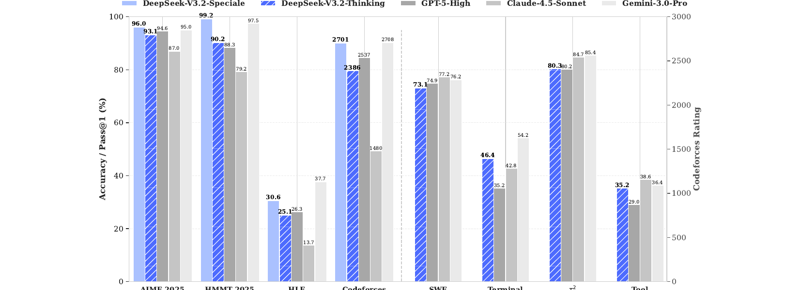
DSA 是 V3.2 相较于 V3.1-Terminus 唯一的架构变更。它基于 MLA 的 MQA 模式实例化， 由两个核心组件构成：
对于每个 query token ht，Lightning Indexer 通过一组轻量级索引头计算其与所有前序 token 的相关性得分：
其中 HI 为索引头数量，q 和 k 分别从 query token 和 key token 的隐状态导出。 索引器使用 ReLU 激活函数以实现 FP8 高效计算，头数较少以控制计算开销。
根据索引得分 {It,s}，通过 Top-k 选择器仅保留得分最高的 k 个 KV 条目进行后续的核心注意力计算：
k = 2048 个 token，远小于序列长度 L，从而将核心注意力的计算量从 O(L2) 降至 O(Lk)。
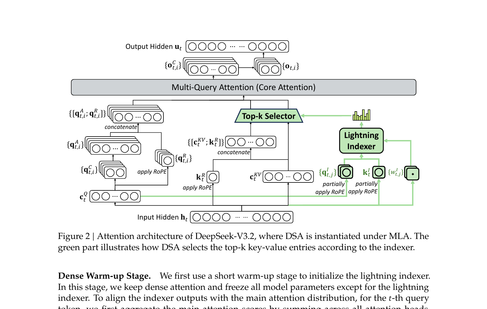
DSA 的引入需要通过两阶段持续预训练来适配模型：
冻结模型主体参数，仅训练 Lightning Indexer。使用 KL 散度损失对齐索引输出与真实注意力分布。 学习率 10-3，仅 1000 步（共 2.1B tokens）。
启用 Top-k 选择机制，同时训练模型和索引器。索引器的输入从计算图中分离以独立优化。 学习率 7.3×10-6，选择 k=2048，训练 15000 步（共 943.7B tokens）。
DeepSeek-V3.2 的后训练计算预算超过预训练成本的 10%，这要求 GRPO 算法必须在大规模训练中保持稳定。 为此，团队提出四项关键改进：
使用重要性采样比率校正 K3 估计器，消除系统性估计误差。原始 K3 估计器在采样 token 的当前策略概率远低于 参考策略时会产生不成比例的大梯度，导致训练不稳定：
对负优势且策略偏离超过阈值 δ 的序列引入二值掩码 Mi,t，防止高度离策的负样本破坏优化过程。 直觉上，模型从自身错误中学习最多，而高度离策的负样本可能具有误导性。
在推理框架采样时保存专家路由路径，训练时强制使用相同路由，确保优化的参数子空间一致。 这解决了 MoE 模型中推理-训练路由不一致导致的参数子空间突变问题。
将 top-p/top-k 采样截断掩码从 πold 传递到 πθ，确保两个策略共享相同的动作子空间， 维护重要性采样的原则。经验上，结合 top-p 采样可有效保持 RL 训练中的语言一致性。
DeepSeek-V3.2 创新性地将思维链推理（Chain-of-Thought）整合到工具调用场景中， 设计了专门的上下文管理策略：
为了提升模型在 Agent 场景下的泛化能力和指令遵循能力，DeepSeek-V3.2 开发了一套系统化的任务合成流水线， 覆盖四类 Agent 场景：
| Agent 类型 | 任务数 | 环境 | Prompt 来源 |
|---|---|---|---|
| Code Agent | 24,667 | 真实 | 提取自 GitHub |
| Search Agent | 50,275 | 真实 | 合成 |
| General Agent | 4,417 | 合成（1,827 环境） | 合成 |
| Code Interpreter | 5,908 | 真实 | 提取 |
General Agent 的合成流程尤为值得关注：自动合成器生成环境和工具集 → 生成任务及验证函数 → 迭代增加难度，确保任务"难以求解但易于验证"。实验表明，合成数据上的 RL 训练能有效迁移到 Tau2Bench、MCP-Mark 等分布外真实环境基准测试中。
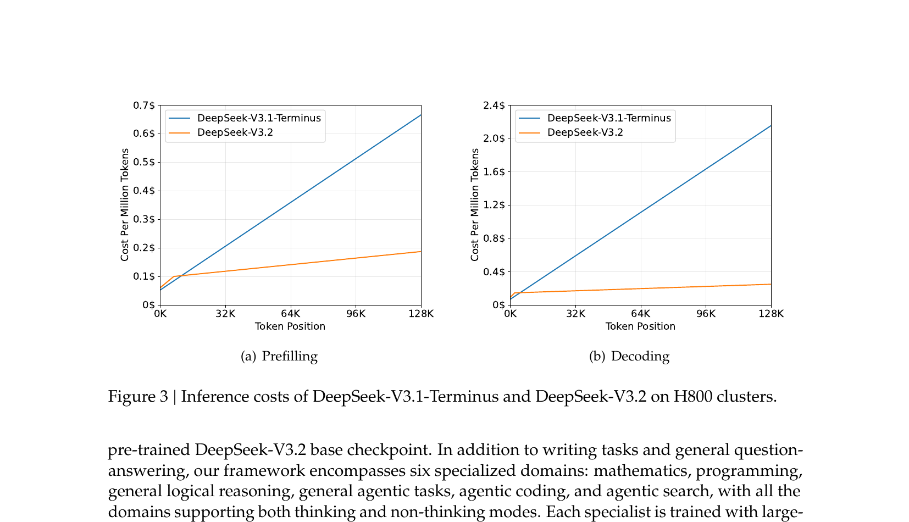
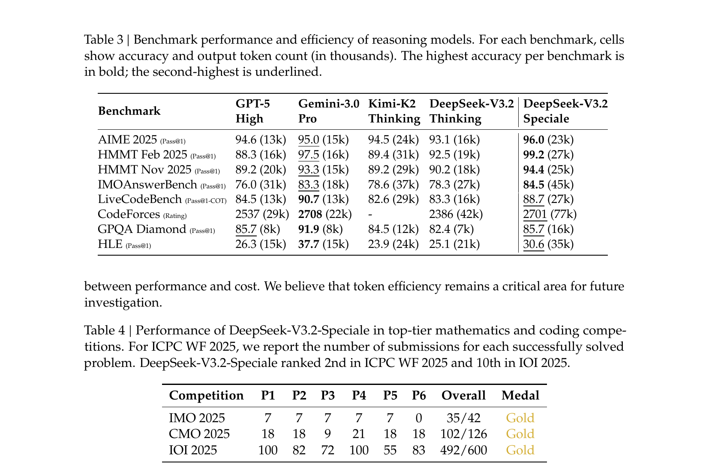
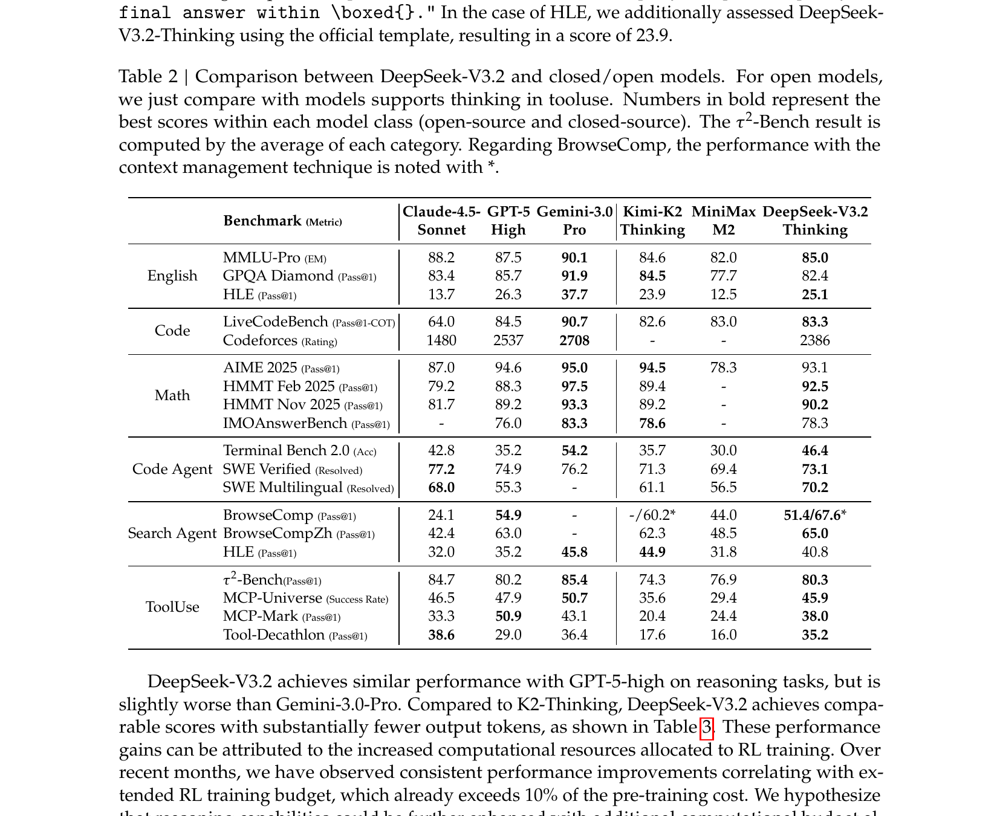
DeepSeek-V4 是全新架构设计的一代模型，核心目标是原生高效支持百万 token 上下文。 它不是 V3.2 的增量升级，而是从架构层面全面重新设计，解决了长上下文场景下的计算和存储效率问题。 发布了两个版本：
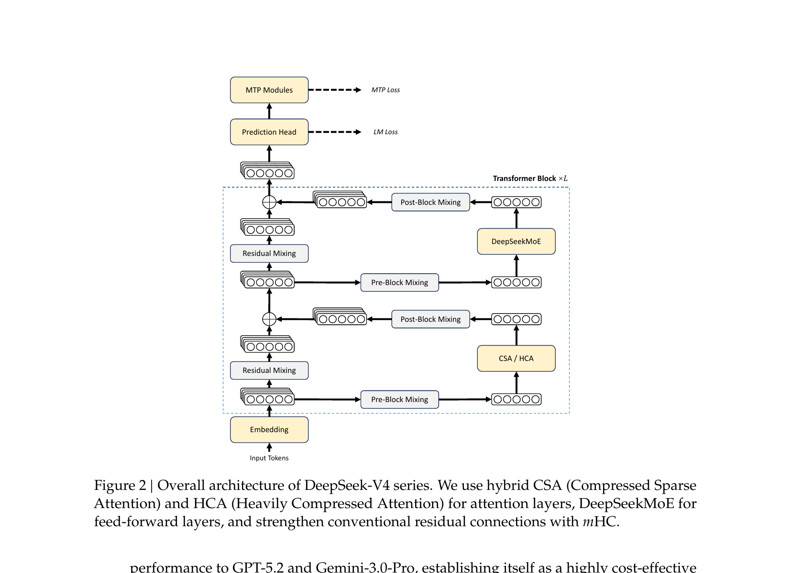
| 规格 | DeepSeek-V4-Pro | DeepSeek-V4-Flash |
|---|---|---|
| 总参数 | 1.6T | 284B |
| 激活参数 | 49B | 13B |
| Transformer 层数 | 61 | 43 |
| 隐藏维度 d | 7168 | 4096 |
| 路由专家数 | 384 | 256 |
| 专家隐藏维度 | 3072 | 2048 |
| 激活专家数 | 6 | 6 |
| 上下文长度 | 1M tokens | 1M tokens |
| 训练数据 | 33T tokens | 32T tokens |
DeepSeek-V4 的核心架构创新是混合压缩注意力，由两种互补机制交替组成： Compressed Sparse Attention（CSA）和 Heavily Compressed Attention（HCA）。
CSA 集成了 KV 压缩和稀疏选择两种策略。首先将每 m 个 token 的 KV 条目压缩为 1 个（压缩率 m=4）， 然后通过 DSA 风格的 Lightning Indexer 对压缩后的 KV 执行 top-k 稀疏选择（k=1024 for Pro）， 最终以 MQA 方式执行核心注意力：
HCA 采用更激进的压缩率 m'（m' ≫ m，V4 中 m'=128），将 KV 缓存压缩到极小体积， 但不使用稀疏选择，而是对所有压缩 KV 执行全注意力。这保证了全局信息的完整覆盖：
两者在 Transformer 层中交替排列（Pro 的前 2 层使用纯滑动窗口注意力，后续层 CSA 与 HCA 交替）。 此外，两种注意力均包含一个额外的滑动窗口分支（nwin=128），用于捕获精细的局部依赖。
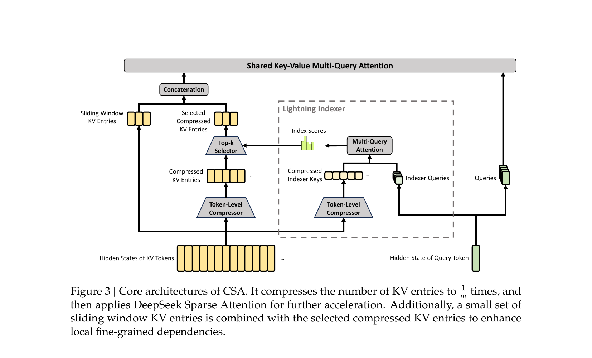
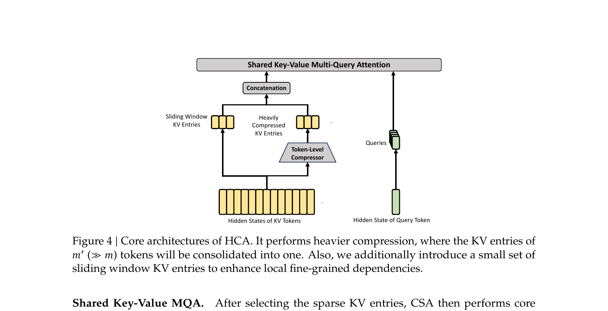
Manifold-Constrained Hyper-Connections（mHC）是 DeepSeek-V4 对传统残差连接的替代方案。 标准的 Hyper-Connections（HC）通过扩展残差流的宽度来增强层间信息传递，但在深层堆叠时会出现数值不稳定。
mHC 的关键创新是将残差映射矩阵 Bl 约束在双随机矩阵流形（Birkhoff 多胞体）上：
这确保映射矩阵的谱范数 ||Bl||2 ≤ 1，使残差变换在前向和反向传播中均为非扩张的， 从而保证深层堆叠的数值稳定性。投影通过 Sinkhorn-Knopp 算法实现（迭代 20 次列/行归一化）。
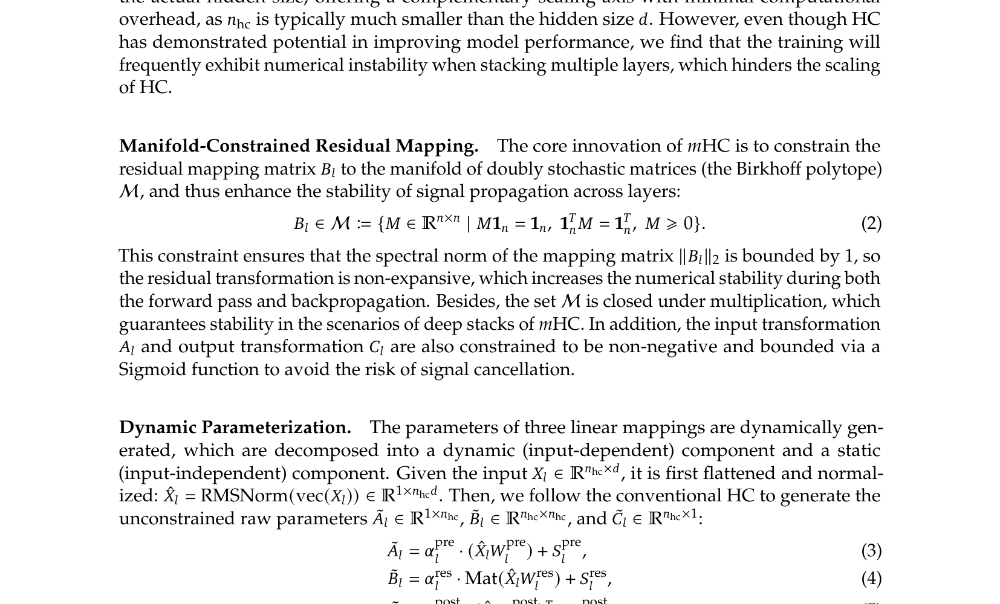
其中 Al 和 Cl 分别是输入和输出映射，通过 Sigmoid 约束为非负有界； Bl 是残差映射，约束在 Birkhoff 多胞体上。三个映射均通过动态参数化生成（输入相关 + 静态偏置）。 V4 设置扩展因子 nhc = 4。
DeepSeek-V4 将 Muon 优化器引入大规模预训练，替代绝大部分参数的 AdamW 更新 （嵌入层、预测头、mHC 静态偏置和 RMSNorm 仍使用 AdamW）。 Muon 的核心是通过混合 Newton-Schulz 迭代对更新矩阵进行近似正交化：
分两阶段执行 10 次迭代：前 8 步使用 (a,b,c) = (3.4445, -4.7750, 2.0315) 快速收敛， 最后 2 步使用 (2, -1.5, 0.5) 精确稳定。最终更新按 √max(n,m) · γ 进行 RMS 缩放。 Muon 带来更快的收敛速度和更好的训练稳定性。
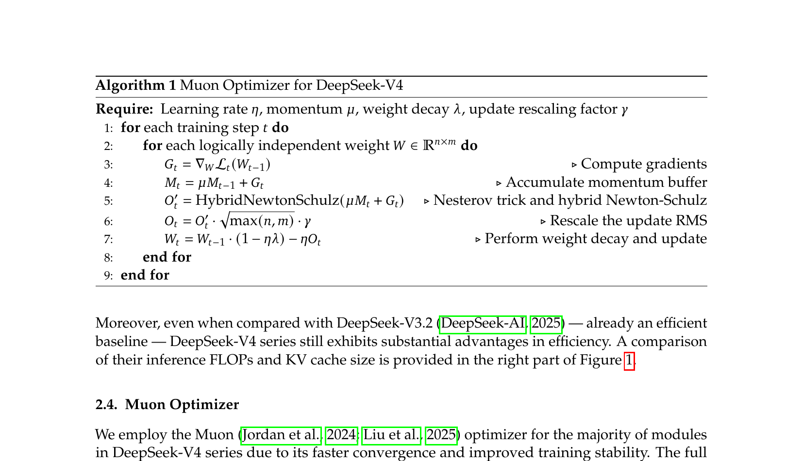
将 MoE 专家拆分为 wave，实现通信与计算的全流水线重叠。开源 MegaMoE 内核，理论加速 1.92×
领域特定语言替代数百个手写 ATen 算子。Host Codegen 降低调用开销至 <1μs，集成 Z3 SMT solver
MoE 权重和 CSA 索引器 QK 路径使用 FP4。FP4→FP8 反量化无损（E4M3 vs E2M1）。Top-k 召回率 99.7%
端到端 batch-invariant、bitwise 确定性内核。用于调试 loss spike 和确保后训练一致性
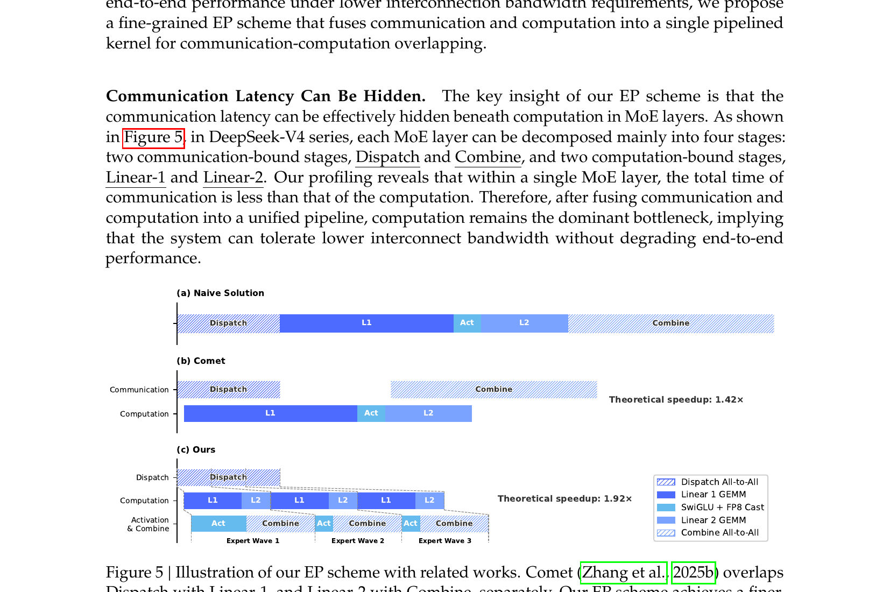
训练万亿参数 MoE 模型时遇到显著的稳定性挑战，DeepSeek-V4 发现并分享了两个实用技术：
DeepSeek-V4 的后训练采用两阶段范式，与 V3.2 的混合 RL 训练有显著区别：
为每个目标领域（数学、编程、Agent、指令遵循等）独立训练一个专家模型。 每个专家先进行领域数据 SFT，然后使用 GRPO 进行领域 RL 训练。 V4 支持三种推理模式（Non-think / Think High / Think Max），通过不同的长度惩罚和上下文窗口实现。
使用 10+ 个领域专家作为教师模型，通过全词表反向 KL 蒸馏将知识融合到单一学生模型中：
关键技术：全词表 logit 蒸馏（而非 token 级采样近似）产生更稳定的梯度； 教师权重通过 ZeRO 分片存储按需加载；只缓存教师最后一层隐状态而非完整 logits， 训练时按需重算 logit，避免 |V|>100k 的显存瓶颈。
V4 构建了生产级沙箱平台 DSec，用于 Agent AI 的后训练和评估。 DSec 由三个 Rust 组件构成（Apiserver / Edge / Watcher），运行在 3FS 分布式文件系统上， 管理数十万并发沙箱实例。支持四种执行基底（Function Call / Container / microVM / fullVM）， 通过统一 Python SDK（libdsec）透明切换。
DeepSeek-V4 在长上下文效率上实现了质的飞跃：
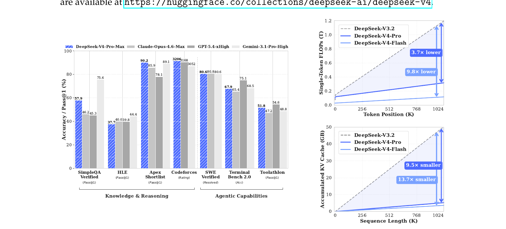
| 维度 | DeepSeek-V3.2 | DeepSeek-V4-Pro | DeepSeek-V4-Flash |
|---|---|---|---|
| 基座来源 | V3.1-Terminus 持续预训练 | 全新从零预训练 | 全新从零预训练 |
| 总参数 / 激活参数 | 671B / 37B | 1.6T / 49B | 284B / 13B |
| 注意力机制 | MLA + DSA（Top-k 选择） | CSA + HCA 混合交替 | CSA + HCA 混合交替 |
| 残差连接 | 标准残差 | mHC（nhc=4） | mHC（nhc=4） |
| 优化器 | AdamW | Muon + AdamW 混合 | Muon + AdamW 混合 |
| 上下文长度 | 128K | 1M | 1M |
| CSA 压缩率 m | N/A（使用原始 DSA） | 4 | 4 |
| HCA 压缩率 m' | N/A | 128 | 128 |
| 稀疏 Top-k | 2048 | 1024 | 512 |
| MoE 路由专家 | 256 | 384 | 256 |
| MoE 亲和函数 | Sigmoid | Sqrt(Softplus) | Sqrt(Softplus) |
| MoE 早期层路由 | 标准路由 | Hash 路由（前 3 层） | Hash 路由（前 3 层） |
| 精度策略 | BF16/FP8 | FP4 QAT + BF16/FP8 | FP4 QAT + BF16/FP8 |
| 后训练方法 | 混合 RL（单阶段） | Specialist + OPD（两阶段） | Specialist + OPD（两阶段） |
| 训练 tokens | ~943.7B（持续PT） | 33T | 32T |
以下是 DeepSeek-V3.2（Thinking 模式）和 DeepSeek-V4-Pro-Max 与主要闭源模型的对比 （数据来源于两篇技术报告的评测表格）：
以下是 V3.2-Base、V4-Flash-Base 和 V4-Pro-Base 的预训练基座模型对比（内部统一评估框架）：
| 类别 | 基准 | V3.2 Base (671B/37B) | V4-Flash Base (284B/13B) | V4-Pro Base (1.6T/49B) |
|---|---|---|---|---|
| 知识 | MMLU | 87.8 | 88.7 | 90.1 |
| MMLU-Pro | 65.5 | 68.3 | 73.5 | |
| SimpleQA | 28.3 | 30.1 | 55.2 | |
| 推理 | BBH | 87.6 | 86.9 | 87.5 |
| DROP | 88.2 | 88.6 | 88.7 | |
| 数学代码 | MATH | 60.5 | 57.4 | 64.5 |
| HumanEval | 62.8 | 69.5 | 76.8 | |
| 长上下文 | LongBench-V2 | 40.2 | 44.7 | 51.5 |
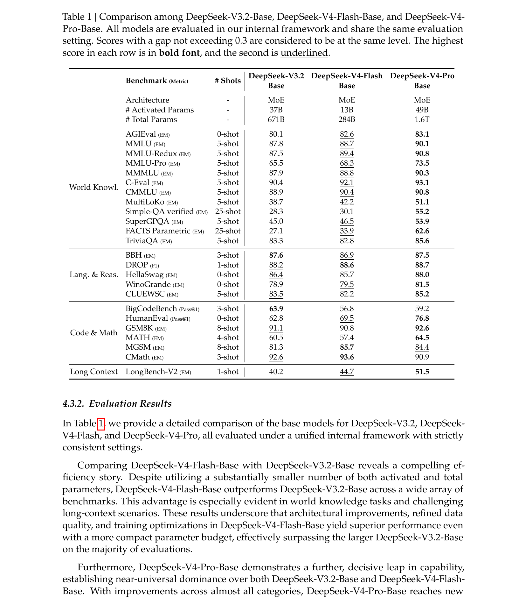
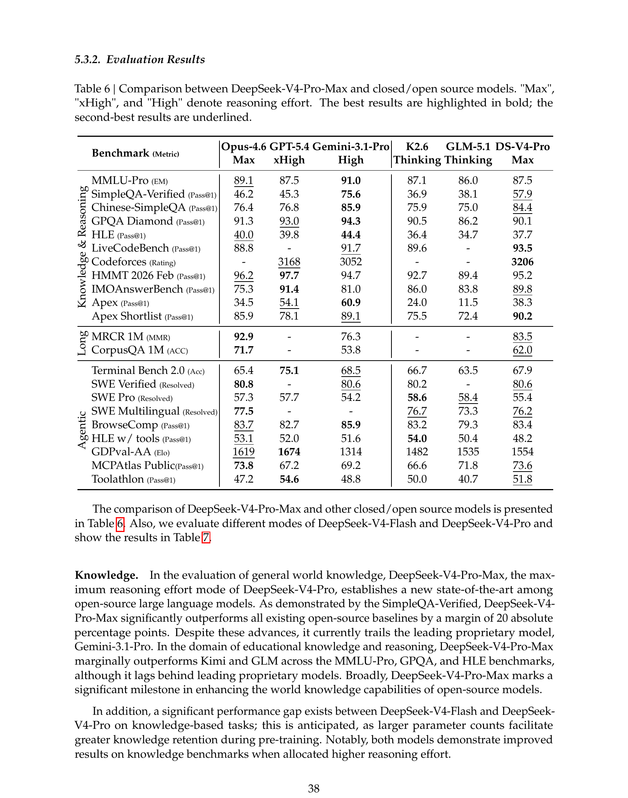
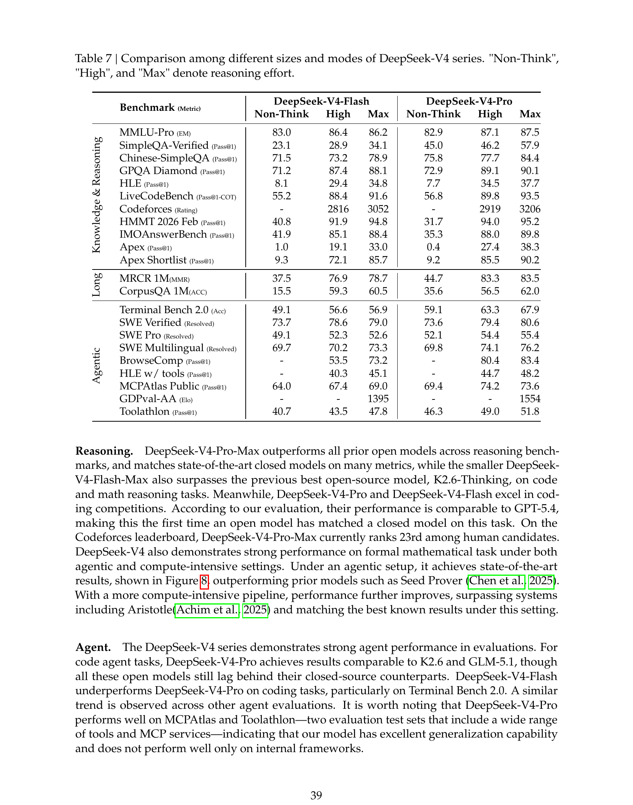
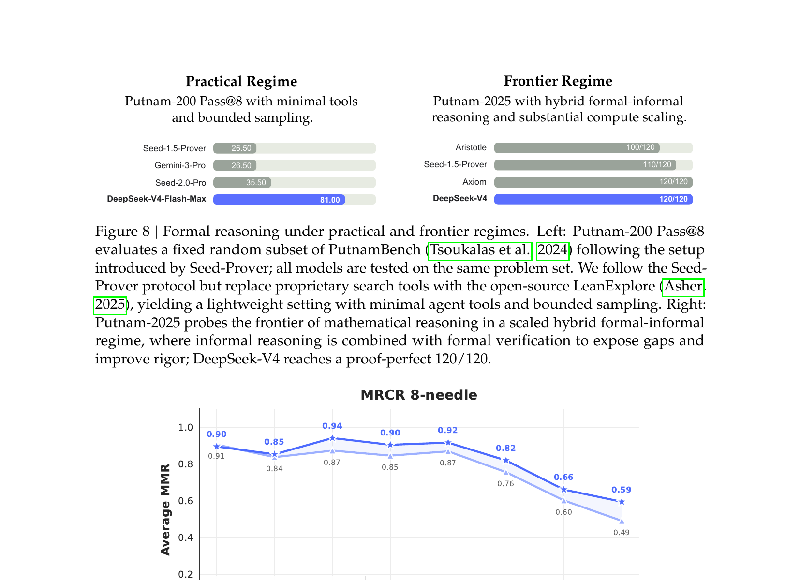
| 技术 | V3.2（DSA） | V4（CSA + HCA） |
|---|---|---|
| KV 压缩 | 不压缩，直接在原始 KV 上选择 | CSA: m=4 压缩; HCA: m'=128 压缩 |
| 稀疏选择 | Lightning Indexer + Top-2048 | CSA: Indexer + Top-k; HCA: 无（全注意力） |
| 注意力类型 | 统一 MQA on MLA | Shared KV MQA + Grouped Output Projection |
| 位置编码 | 部分 RoPE（via MLA） | 部分 RoPE（最后 64 维）+ 输出反向 RoPE |
| 滑动窗口 | 无 | nwin=128 附加分支 |
| Attention Sink | 无 | 可学习 sink logits z'h |
| 上下文能力 | 128K | 1M（原生支持） |
Unbiased KL / Off-Policy Masking / Keep Routing / Keep Sampling Mask，使 RL 在 MoE 上稳定扩展
自动化环境构建 → 工具合成 → 任务生成 → 难度迭代，产出 1827 环境 / 4417 任务
工具调用场景下的推理上下文保留策略，避免重复推理的 token 浪费
Summary / Discard-75% / Discard-all 三种策略，扩展测试时计算的有效步数
Birkhoff 多胞体约束确保谱范数 ≤1，Sinkhorn-Knopp 20 次迭代投影，扩展因子 nhc=4
混合 Newton-Schulz 正交化（两阶段 10 步），更快收敛 + 更好稳定性
全词表反向 KL 蒸馏，10+ 专家教师融合，避免灾难性遗忘
Anticipatory Routing（解耦路由更新）+ SwiGLU Clamping（消除异常值）
MoE 权重 + CSA QK 路径 FP4 量化，FP4→FP8 反量化无损，Top-k 召回率 99.7%
Rust 实现，4 种执行基底，3FS 文件系统，管理数十万并发沙箱
特殊 token 机制复用 KV Cache 执行辅助任务，降低 TTFT
模型自身作为 GRM 评估策略轨迹，无需独立奖励模型
从 DeepSeek-V3.2 到 V4，我们可以清晰地观察到大语言模型发展的几个重要趋势：
V3.2 的 DSA 是在原始 KV 上做稀疏选择（O(Lk)），V4 则先压缩再选择。 CSA 的"压缩+稀疏"和 HCA 的"极端压缩+全注意力"形成互补， 前者保证精度，后者保证覆盖。这种混合策略可能成为长上下文模型的标准范式。
V3.2 将所有领域合并到一个 RL 阶段训练，虽然简单但存在灾难性遗忘风险； V4 转向"独立训练专家 + OPD 蒸馏合并"的两阶段范式。 这反映了后训练规模扩大后，对模块化和可控性的更高需求。
V4-Flash 以仅 13B 激活参数达到接近 V3.2（37B 激活）的性能， KV Cache 在 1M 上下文下缩减到传统方案的 2%。 这表明架构创新（而非单纯堆叠参数）是提升效率的主要杠杆。 对于开源模型而言，推理成本可能比绝对性能更能决定其实际应用范围。
DeepSeek-V4-Pro-Max 已在推理、代码、数学等维度上接近 GPT-5.4 / Gemini-3.1-Pro， 但在世界知识广度和 token 效率上仍存在差距。 这些差距主要源于预训练数据规模和质量的结构性劣势，而非架构能力的不足。